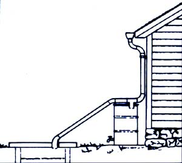

Gary Colvin was unable to locate the proper filters for his milk strainer, so the Bunker, Missouri homesteader made his own ... from gauze diapers. His wife simply cut new "nappies" into squares slightly larger than the diameter of the dairy strainer, and finished all four edges with rolled hems. Now-after straining the cow's daily offerings-Gary washes the filters in soapy dishwater and rinses them well, then boils them for five minutes while he cleans the rest of his milking equipment. The Colvins say they've saved money by not having to buy the usual disposable filters every few weeks.
In some northern locations, now's a good time to tap homestead maple trees and make some delicious syrup! And while you're at it, you can make some of the tasty ice-pop treats that Denise Entin of Carmel, New York wrote to tell us about. It seems Denise takes maple sap that hasn't quite been boiled down to the syrup stage, and pours this liquid into popsicle holders to freeze. The Empire Stater claims the pops are delicious!
When Alan Pryor uses his electric drill for shop projects, he extends the life of the sharpened bits by using lard to lubricate their cutting surfaces. The Palo Alto, Californian always keeps a tin full of the hardened pork fat on his workbench. Then, anytime he has to drill metal, he first dips the end of the bit into the lard. Alan believes it works far better than any expensive cutting oil.
According to a MOTHER-reader in Roca, Nebraska, Frisbees make excellent impromptu chicken feeders and waterers! When a neighbor presented Margaret Traudt with a banty hen and nine fuzzy chicks, she had quite a time coming up with a temporary waterer that was stable enough not to tip over, yet shallow enough to prevent any accidental drownings. Her children's flying disks did the trick until a permanent setup could be arranged.
"When one of my children was sick, I found it difficult to get my household chores done with a fussy 'patient' constantly begging for attention," says Lillian Reynolds of New Orleans, Louisiana. "But I solved the problem with the aid of an alarm clock. I set the alarm for 30 minutes, and used that time to read to (or otherwise entertain) the child. Then, when the alarm went off, I would reset it for another 30 minutes, with the understanding that my child would amuse him- or herself so I could do housework. When the alarm rang again, I'd return for 30 more minutes of play. The technique worked well, eliminated the pleas for attention, and helped me avoid yelling the typical too-busy mother's response: 'In a minute!' "
Morris, Minnesota resident Larry Dake has devised a way to keep the liquid that collects in his rainwater cistern relatively clear and odor-free. He sets a barrel (complete with spigot and cover) below the downspout of the eaves trough, and connects the closed barrel to the spout with a simple T-joint. When it rains, the first rush of water rinses the dirt and debris from the roof into the barrel. Then, by the time the container is full, the roof is clean ... and all the remaining runoff water automatically overflows into the cistern. (The barrel can be emptied and its contents used to water plants.)
A Ruthdrum, Idaho reader, Russell arrier, reports that plain white toothpaste, when applied immediately to minor burns and left to dry, will help ease the pain and promote healing!
And, according to Charlotte Under wood of Ports, Virginia, another good alternative use for white toothpaste is as a "ring remover" on wooden tables. Charlotte rubs a small amount of the tooth polish directly on the mark, and then finishes cleaning the tables as usual.
Cora May Howe sent us an unusual seedstarting tip. Cora-who lives in Bennington, Vermont-places several garden seeds on top of an unglazed brick, and covers them with a small bit of soil. She then puts the brick in a tray of shallow water and sets the whole thing in a suitably dark spot. The brick soaks up moisture gradually to keep the seeds watered.
Here's another unusual bit of gardening lore ... this one contributed by Nancy Nelson, who resides in Viking-stad, Sweden. When Nancy sets cuttings to root (in order to provide new plants), she always places a few grains of wheat near the base of each slip. Nancy maintains that the wheat, as it germinates, gives off a hormone that promotes new root growth.
Thomas Patterson places an open pan of household ammonia in his prewarmed (but shut-off) oven overnight when it needs cleaning. The Lombard, Illinois resident says the ammonia seems to react with the grease and grime in the oven to form a "soap", which washes off easily. Tom does warn that the fumes can be overpowering (and unhealthful), so he advises that folks who try his method step back quickly when opening the oven door for the first time in the morning!
Here's a way you can make another dreary household chore easier. Sally Halfaker of St. Charles, Missouri removes tarnish from her silver flatware, pitchers, candy dishes, and jewelry by placing the items in a bucket of lukewarm salt water to which she's added small pieces of aluminum foil. (Sally cleans and recycles used bits of foil for this purpose.) The Show-Me Stater lets the mixture stand overnight in a ventilated area (it'll give off a "sulfur" odor) and the next morning washes the silver in sudsy water and dries it carefully. Sally says it all comes out looking new.
"During our first attempt to raise chickens, we wound up with birds of different ages," writes Pat Kuenecke of Camano Island, Washington, "and the older ones immediately began pecking at the newly introduced younger hens. Well, a local expert suggested that I coat each chick's back with Vicks Vapo Rub ointment. I still laugh when I think of those mean old biddies scrubbing their beaks on the ground in disgust. It took only one such episode to educate them!"
Through the years we've all probably discovered a few practical, down-home, timetested solutions to the frustrating little problems of everyday life. Why not share your best "horse sense" with the rest of MOTHER's readers? Send your suggestions to Down-Home Country Lore, THE MOTHER Earth NEWS (restricted) , 105 Stoney Mountain Road, Hendersonville, North Carolina 28791. A one-year subscription - or a one-year extension of an existing subscription - will then be sent to each contributor whose tip is printed in this column. - MOTHER.
|
 |
|
|